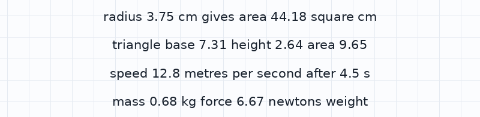
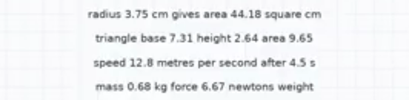
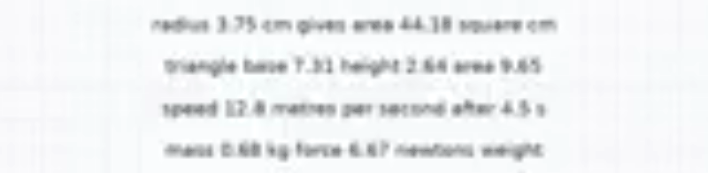

Test results: first prototype
We made the same lesson twice: once as a Vecta lesson, and once as a normal whiteboard video. Then we measured how big each one is and whether its text can still be read.
1. How much data the lesson uses
Both versions use the same voice recording. The difference is how the board is sent: as pixels in a video, or as Vecta's drawing instructions.
| Format | This lesson | Per hour | Board data | vs Vecta |
|---|
The video was encoded with x264 (CRF 28, preset slow), a very efficient setting, and the lesson is a clean computer-drawn board. That is a best case for video: filmed whiteboards and streaming apps usually use more data.
2. Can the text still be read?
We showed text at different sizes, measured as a share of screen height, through each format on a 1280×720 screen, and had OCR software read it back. Cells show the share of words and numbers read correctly.
| Text size | Vecta | 144p | 240p | 360p | 480p | 720p |
|---|
Lesson headings are about 7–8% of screen height and survive 144p. Small labels and worked steps (2–3.5%) are where low-resolution video breaks down. OCR stands in for human eyes until our student test is done.
3. The same text at 3% of screen height



What this test does and doesn't show
- Shows: Vecta text stayed readable at every size, while small text in 144p video was mostly unreadable.
- Shows: the drawing instructions are tiny, about 1 KB for the whole lesson.
- Doesn't show: large savings on the whole lesson. Against this efficient video, Vecta was about 2× smaller at 240p, because the voice is most of the file.
- Next: a student readability test, a real filmed whiteboard lesson, and data measured from a streaming app.